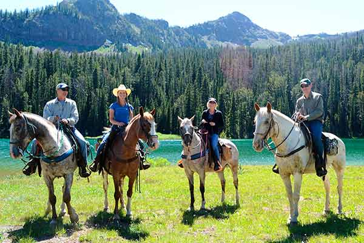

Located just outside of Rocky Mountain National Park in Colorado, Paradise Mountain Family Resort is the perfect getaway place for the whole family. Adults can enjoy discounted golf and complimentary use of our health club and tennis facilities while the little ones participate in our popular children’s program.
Friday night dances are always a hit with the teens, and our new skate park offers one of the finest courses designed to entertain and challenge skaters, whether they are beginners or more experienced.
Hiking is a must-do activity in the beautiful Rocky Mountains. Guests can participate in one of our wilderness treks (designed for both experienced and beginning hikers), or strike out on their own for a more intimate wilderness experience.

In addition to hiking activities, during the summer months guests can enjoy horseback riding, white-water rafting, or fly fishing for trout in one of our many private streams. Rodeo fans arriving in mid-July will be sure to catch some of the events at the annual PRCA Rooftop Rodeo at the nearby Stanley Park Fairgrounds.
Wintertime guests are sure to enjoy a snowshoe trek along our well-manicured trails, a brisk downhill ski run, or the comfort of a cozy fire in our rustic ski lodge.
Other on-site or nearby seasonal events and activities include Boulder Walk and Bike Week (June), 4th of July Fireworks, The Paradise Mountain Cycling Road Rally (July), and the Scottish Highlands Festival (the week following Labor Day).
Send inquiries regarding rates and reservations to:
Paradise Mountain Family Resort
PO Box 17603
Estes Park, CO 80517
Phone: 1.970.555.7777